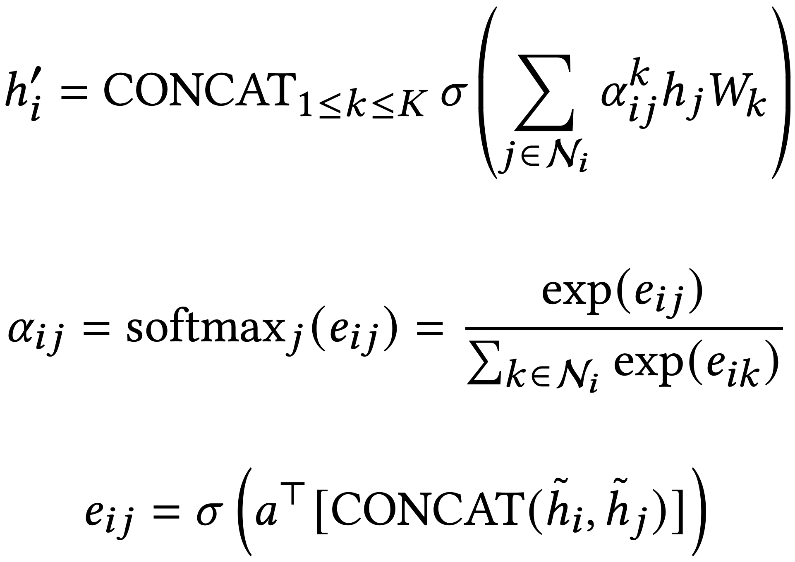
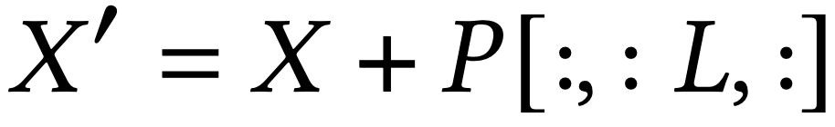
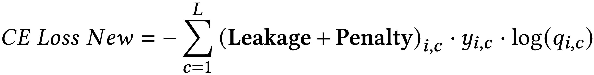

Background
Chip placement and routing (P&R) is the engineering task of designing the physical layout of a computer chip. Although P&R could physically produce a layout with an optimization process, it is an NP-hard problem that can optimize the layout considering various metrics for improvement. Particularly in the gate size optimization problem, researchers couldn’t find a feasible algorithmic method, even if they suggested various adequate methods for several decades. Thus, ML has emerged as a promising direction for discovering more effective optimization strategies in gate sizing.
We present an ML-driven approach that aims to solve the gate sizing problem with improved efficiency and scalability.
Gate Sizing Problems
Gate sizing has long been explored as a technique for optimizing the circuit's performance, power, and area (PPA) by assigning the appropriate gate size to each cell from the available library candidates. For standard cells with identical functionality, increasing the cell size typically enhances drive strength, reducing intrinsic delay but leading to higher leakage power and larger area.
Thus, standard practice involves upsizing cells along timing-critical paths, while downsizing non-critical cells to optimize the overall design metrics. However, indiscriminately following this approach may cause problems because gate sizing decisions are not purely local. For example, upsizing a cell experiencing a setup timing violation can reduce its intrinsic delay and resolve downstream timing issues. Nevertheless, this upsizing simultaneously increases the cell’s input capacitance, imposing a higher load on its driver cell and thereby potentially increasing the delay of upstream stages. Consequently, this can introduce or exacerbate timing violations in preceding stages.
- Technical definition of gate sizing (with Figure)
- Explanation of PPA
As this sizing technique is one of the most powerful steps in achieving the target PPA in the optimization process, it has been extensively studied for a long time.
Graph Representation Method
Graph representation methods are widely used when the connection information between components is essential, such as circuit design, social networks, and molecular modeling. Encoding the above data as graphs enables the structure to contain connectivity information so that learning based methods, such as Graph Neural Networks (GNNs), can be effectively leveraged. For example, Google’s graph-based placement methodology [Mirhoseini et al., Nature 2021] successfully applied GNNs to netlist graphs for chip floorplanning.

Motivated by these approaches, we adopt a graph-based representation of a circuit by viewing gate-level netlists as a graph with embedded features, enabling practical application of learning-based optimization techniques to the gate sizing problem.
To construct the graph representation of the gate-level netlist, we utilize GNN-based embedding. While various architectures such as GCN, GraphSAGE, and GAT could be employed for this purpose, we specifically adopt the GAT structure to address the over-smoothing problem commonly observed in deep neural networks. For each K-head GAT layer, it can be formulated as follows:
where h′_i and h_i are the old and new features of node v_i, ∥ denotes concatenation, αk_ij are normalized attention coefficients computed by the k-th attention mechanism and · _T denotes transposition, ω_k is the corresponding input linear transformation’s weight matrix, Ni denotes the neighbor of node v_i.
Machine learning framework with GNN-based embedding
⋯ (write content here) ⋯
Methods
In this section, we introduce our gate sizing framework, which leverages a heterogeneous graph attention network combined with transformer encoder layers. We explain how the netlist is represented as a graph with embedded features, detail the architecture used for size prediction, and describe the design of our loss function.
Graph Representation and feature embedding
We first partition the circuit into smaller subcircuits to simplify the circuit for efficient modeling. Each subcircuit is defined by designating input ports or registers as starting points and output ports or registers as endpoints. Specifically, a subcircuit combines all paths sharing the same start and endpoints. Thus, we propose a heterogeneous graph model that effectively captures the intrinsic structure of the circuit by delineating its two fundamental node types: pins and cells, as depicted in Fig. 2.

As shown in the figure, subcircuits were extracted by designating input ports or registers as the starting points and output ports or registers as the endpoints. In addition, when we extracted subcircuits, each subgraph was defined as the combination of all paths that share the same start and endpoints. These methods allow for better sizing by including connectivity information between cells that traditional sequence modeling does not have.
Based on the extracted circuit information, nodes are assigned two types: pins and cells. Edges are classified into three categories according to their connectivity. The first edge type is the gate arc edge, which is the connection between a cell and its corresponding pin. During the gate sizing process, subtle changes in the slew and arrival time of each pin can significantly influence size decisions for the corresponding cell. To capture this relationship, a gate arc edge is introduced. The second edge type is the net arc edge, which represents connections between pins of different cells. This edge is introduced because delays associated with net arcs directly impact gate sizing decisions. Finally, cell arc edge refers to pin connections within the same cell.

Also, we describe the features embedded in each cell and pin of the heterogeneous graph. Detailed information is provided in the Table. We extracted physical and timing information from the circuits and embedded these features into each pin and cell node. The features embedded in the cell nodes are denoted as 𝑓cell, while those in the pin nodes are denoted as 𝑓pin.
Model Architecture (HeteroGAT and Transformer)
Our proposed approach incorporates both topological and geometric circuit information to improve sizing performance. The following figure illustrates an overview of DPH-Sizer.

Heterogeneous Graph
Unlike prior approaches that treat pins and cells as a single entity, we explicitly represent them as separate nodes in a heterogeneous graph for gate sizing. This separation provides two key advantages. First, it effectively captures interactions between driver and receiver pins connected through nets; for instance, upsizing a cell increases the load on its driver cell’s output pin, impacting neighboring cells. Second, it allows the model to explicitly learn the relationship between cells and pins, such as variations in input pin capacitance and output drive strength due to cell resizing. Moreover, as previously noted, GAT helps mitigate the over-smoothing problem. Another motivation for adopting GAT is that, in gate sizing, not all input cells are equally influential. Typically, the driver cell with the worst delay has the most significant impact on sizing decisions. Therefore, GAT, which assigns adaptive weights to neighbor nodes, is more suitable for gate sizing than GCN, which aggregates neighbors using fixed weights. The embedding update equation for the GAT is defined as follows: Where 𝑒_𝑖𝑗 denotes the attention score between node 𝑖 and its neighbor node 𝑗, computed using input embeddings˜_ℎ_𝑖 and˜_ℎ_𝑗, a learnable attention parameter vector 𝑎, and the sigmoid activation function 𝜎, the normalized attention coefficient 𝛼_𝑖𝑗 is obtained by applying the softmax function to these attention scores, measuring the relative importance of node 𝑗 in updating node 𝑖’s embedding. The updated embedding ℎ′𝑖 for node 𝑖is calculated by concatenating the outputs from multiple attention heads, where each head 𝑘 employs a distinct learnable weight matrix 𝑊𝑘 and computes its attention coefficient 𝛼𝑘_𝑖𝑗. Here, 𝐾 represents the total number of attention heads, and N𝑖 denotes the set of neighbor nodes for node 𝑖. With bidirectional edges, cell nodes connect via cell-to-pin and pin-to-cell edges; final cell embeddings are obtained by attention-weighted summation of embeddings from each edge type. However, pin nodes are connected through both cell-to-pin, pin-to-pin, and pin-to-cell edges. Therefore, pin node embeddings are obtained by an attention-weighted sum of embeddings from three edge types.
Transformer
Although the above graph structure effectively captures the topological information of circuits, it primarily employs attention mechanisms focused on the local neighborhood of nodes. Consequently, it captures structural characteristics only within a relatively narrow scope. To address this limitation and incorporate global geometric structures and long-range dependencies within circuits, we integrate a transformer into our framework. However, transformers inherently lack the ability to capture positional information among elements unless such information is explicitly provided. In graph-based tasks, this is particularly important because the relationships between nodes are not inherently ordered, unlike in sequence-based tasks like NLP. Without positional encoding, the transformer is unable to differentiate among node types or capture their topological and spatial relationships within the graph. Following two successive HeteroGAT layers, cell and pin embeddings individually reside in R^(𝐵×𝑁𝑐 ×𝐹𝑜) and R^(𝐵×𝑁𝑝 ×𝐹𝑜), respectively. We concatenate both embeddings to form the input to the positional encoder, fully leveraging the extracted node representations. Given an input embedding sequence 𝑋 ∈R^(𝐵×𝐿×𝑑_model) and a learnable positional encoding matrix 𝑃 ∈R^(1×𝐿_max × 𝑑_model), the output embedding 𝑋′with positional encoding is defined by adding the positional encoding to the input embeddings. Where 𝐵 denotes the batch size, 𝐿= 𝑁𝑐+𝑁𝑝 is the total number of nodes, and 𝑑model represents the embedding dimension. The positional encoding matrix 𝑃 is optimized jointly with the transformer parameters, enabling the model to learn meaningful positional information of the nodes adaptively.
Loss Function
We formulate the gate sizing problem as a node classification task. One challenge in formulating gate sizing as a classification task is that each gate has different size limits. This constraint sometimes causes the classifier’s output to exceed the maximum allowable size for a given gate. To address invalid predictions, we proposed loss modification. The binning method groups multiple possible gate sizes into a smaller number of bins, reducing the prediction range. Although this approach simplifies model training by decreasing the number of output classes, it ignores subtle differences among sizes within each bin, hindering size optimization and potentially degrading final model accuracy. In contrast, our approach directly penalizes invalid size predictions within the loss function, preserving detailed distinctions among individual cell sizes. Since timing-driven sizing optimization may inadvertently increase leakage power, we explicitly incorporate a leakage power term into our loss function to guide the model toward balanced optimization of both timing and leakage. The proposed loss function is defined as follows:
By penalizing invalid size selections, the proposed loss function strongly discourages infeasible predictions during training. Additionally, by incorporating leakage power directly into the loss, the model naturally favors gate sizes with lower leakage when they provide similar accuracy.
Experimental Results
- Explanation of metric (Model Performance, PPA, Runtime)
- Discussion about how the model approaches this performance
Model Performance
⋯ (write content here) ⋯
Conclusion
In this work, we formulated gate sizing as a node classification problem and proposed DPH-Sizer, a novel framework combining a heterogeneous graph, Graph Attention Networks (GAT), and a transformer network.
- Limitations of this work
⋯ (write content here) ⋯
References
- Gate sizing in MOS digital circuits with linear programming MRCM. Berkelaar et al., Proc. EDAC, 1990.
- Linear programming for sizing, Vth and Vdd assignment DG. Chinnery et al., Proc. ISLPED, 2005.
- Gate Sizing For Cell Library-Based Designs S. Hu et al., Proc. DAC, 2007.
- A New Algorithm for Simultaneous Gate Sizing and Threshold Voltage Assignment Y. Liu et al., Proc. ISPD, 2009.
- Gate sizing and device technology selection algorithms for high-performance industrial designs MM. Ozdal et al., Proc. ICCAD, 2011.
- JiffyTune: circuit optimization using time-domain sensitivities G. Flach et al., Proc. ISVLSI, 2013.
- Fast Lagrangian relaxation-based gate sizing using multi-threading A. Sharma et al., Proc. ICCAD, 2012.
- Fast and exact simultaneous gate and wire sizing by Lagrangian relaxation CP. Chen et al., in IEEE Transactions on Computer-Aided Design, 1999.
- Simultaneous Gate Sizing and Vth Assignment using Lagrangian Relaxation and Delay Sensitivities G. Flach et al., Proc. ISVLSI, 2013.
- Effective Method for Simultaneous Gate Sizing and Vth Assignment Using Lagrangian Relaxation G. Flach et al., in IEEE Transactions on Computer-Aided Design of Integrated Circuits and Systems, 2014.
- Fast Lagrangian Relaxation-Based Multithreaded Gate Sizing Using Simple Timing Calibrations A. Sharma et al., in IEEE Transactions on Computer-Aided Design of Integrated Circuits and Systems, 2020.
- Task-Based Parallel Programming for Gate Sizing D. Mangiras et al., in IEEE Transactions on Computer-Aided Design of Integrated Circuits and Systems, 2023.
- Integrating LR Gate Sizing in an Industrial Place-and-Route Flow D. Chinnery et al., Proc. ISPD 2022.
- RL-Sizer: VLSI gate sizing for timing optimization using deep reinforcement learning YC. Lu et al., Proc. DAC 2021.
- Heterogeneous Graph Neural Network-Based Imitation Learning for Gate Sizing Acceleration X. Zhou et al., Proc. ICCAD 2022.
- AGD: A Learning-based Optimization Framework for EDA and its Application to Gate Sizing X. Zhou et al., Proc. DAC 2023.
- Learning-driven Physically-aware Large-scale Circuit Gate Sizing Y. Ye et al., in IEEE Transactions on Computer-Aided Design of Integrated Circuits and Systems, 2024.
- DAGSizer: A directed graph convolutional network approach to discrete gate sizing of VLSI graphs CK. Cheng et al., ACM Transactions on Design Automation of Electronic Systems 2023.
- Improving timing & power trade-off in post-place optimization using multi-agent reinforcement learning J. Seo et al., Proc. ICCAD 2024.
- TransSizer: A Novel Transformer-Based Fast Gate Sizer S. Nath et al., Proc. ICCAD 2022.
- An Image is Worth 16×16 Words: Transformers for Image Recognition at Scale A. Dosovitskiy et al., Proc. ICLR 2021.
- A Neural Architecture Predictor based on GNN-Enhanced Transformer X. Xiang et al., Proc. AISTATS 2024.
- Attention is all you need Vaswani et al., Proc. NeurIPS 2017.
- Understanding Graphs in EDA: From Shallow to Deep Learning Y. Ma et al., Proc. ISPD 2020.
- Neural Message Passing for Quantum Chemistry K. Yang et al., Proc. ICML 2017.
- GraphSAGE: Inductive Representation Learning on Large Graphs W. Hamilton et al., Proc. NeurIPS 2017.
- DeepWalk: Online Learning of Social Representations B. Perozzi et al., Proc. KDD 2014.
- Gate sizing and device technology selection algorithms for high-performance industrial designs MM. Ozdal et al., Proc. ICCAD 2011.
- Graph attention networks P. Velickovic et al., arXiv preprint arXiv:1710.10903 2017.
- ParaGraph: Layout Parasitics and Device Parameter Prediction using Graph Neural Networks H. Ren et al., Proc. DAC 2020.
- A Fast Learning-Driven Signoff Power Optimization Framework YC. Lu et al., Proc. ICCAD 2020.
- GRANNITE: Graph Neural Network Inference for Transferable Power Estimation Y. Zhang et al., Proc. DAC 2020.
- Deep Residual Learning for Image Recognition K. He et al., Proc. CVPR 2016.
- AST: Audio Spectrogram Transformer Y. Gong et al., Proc. Interspeech 2021.
- SSAST: Self-Supervised Audio Spectrogram Transformer Y. Gong et al., Proc. ICASSP 2022.
- BEVFormer: Learning Bird’s-Eye-View Representation from Multi-Camera Images via Spatiotemporal Transformers Z. Liu et al., Proc. ECCV 2022.
- Transfuser: Imitation with Transformer-based Sensor Fusion for Autonomous Driving A. Mehta et al., Proc. CoRL 2022.
- PyTorch: An Imperative Style, High-Performance Deep Learning Library A. Paszke et al., Proc. NeurIPS 2019.
- Deep Graph Library: A Graph-Centric, Highly-Performant Package for Graph Neural Networks M. Wang et al., arXiv preprint arXiv:1909.01315, 2019.
- A Graph Placement Methodology for Fast Chip Design A. Mirhoseini et al.,Nature 594, pp. 207-212. 2021.
- Opencores https://opencores.org
- Synopsys Design Compiler v18.06 User Guide
- Cadence Innovus Implementation System v21.16 User Guide